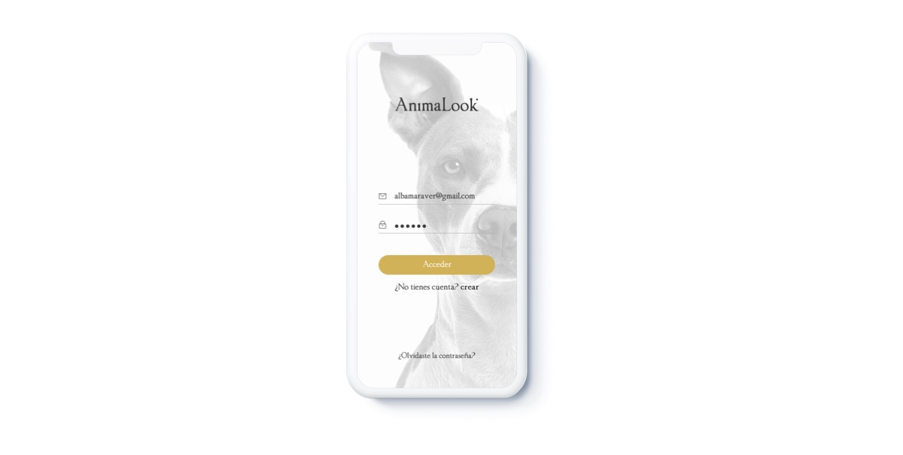
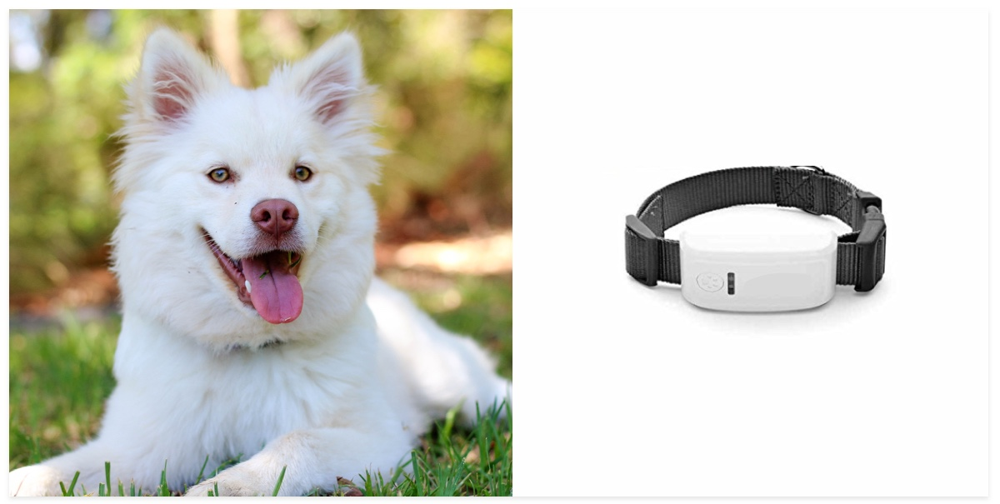
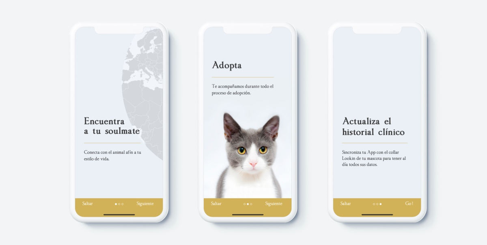
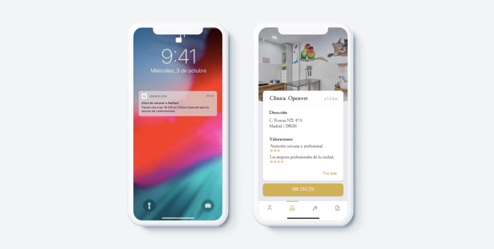

<div class="load-data">
        <div class="block-content">
                <div class="project-media row">
                    <div id="lionslider" class="carousel slide" data-ride="carousel">
                        <div class="carousel-inner">
                            <div class="carousel-item active">
                                
                            </div>
                        </div>
                    
                    </div>
                </div>
        <div class="project-head">
            <h1 class="block-title">AnimaLook - APP</h1>
            <div class="tags"><span>Category : </span> UX - UI / Apps</div>
           
            <div class="tags"><span>Completion : </span> Dec 2018</div>
            <div class="tags"><span>Sector : </span> Pet adoption</div>
        </div>
        
        <p class="project-description">
                <h5>NEXT STEPS ANIMALOOK WEB</h5>
            In relation to the Web AnimaLook (read the second project) I proposed the inclusion of its App version as a scalable product with the objective that the user has all the <strong>information of his adopted pet accessible.</strong> 
            In the research more than 82% of users claimed <strong>to forget vanishing date</strong> of their pet and said it was very <strong>frustrating</strong> to write down the veterinarian appointments, deworming, etc. especially when you have more than one pet. </p>
            <p><em>Product development</em> </p> 
            <p>The development consists of a device on the dog collar that is synchronized with the App. It is not about manually registering the data in the App, but rather that <strong>the veterinarian registers it directly in the collar device which synchronizes with App automatically. </strong> In this way the data will always be updated. The App will request a registration number from the user that belongs to his device. </p>    
            <div class="col-md-6" style="margin:0% auto">
                    
            </div>
            <p></p>
            <p>The clinical record of the pet is registered and the user can perform functions such as:</p>
            <ul>
                    <li>- Activating alerts of future vaccination dates</li>
                    <li>- Consulting deworming dates</li>
                    <li>- Pet diseases</li>
                    <li>- Direct contact to veterinarians</li>
                    <li>- Pet health</li>
                </ul>
            <p></p>
            In this way, veterinarians could modify the timely information easily after appointments with users and pets at clinics. 
            The aim is also to obtain the participation of veterinary clinics and the sponsorship of brands involved in this sector.</p>
            <p><em>Engagement</em> </p> 
                <p>Once the user has interacted with Animalook Web platform for the first time, we will encourage him <strong>to continue being part of the product</strong> with this App Version and thus have a follow-up of the clinical history of the adpted pet.</p>
                <div class="block-content">
                        <div class="project-media row">
                            <div id="lionslider" class="carousel slide" data-ride="carousel">
                                <div class="carousel-inner">
                                    <div class="carousel-item active">
                                        
                                    </div>
                                </div>
                                <div class="carousel-inner">
                                        <div class="carousel-item active">
                                            
                                        </div>
                                    </div>
                            
                            </div>
                        </div>
                <div class="project-head">
                
        </div>
        <div class="project-nav text-center">
            <span class="float-left">
                <a class="open-project" href="project-5.html">&leftarrow; Previous Project</a>
            </span>
            <span class="">
                <a id="close-project" href="#"><i class="ion-grid"></i></a>
            </span>
            <span class="float-right">
                <a class="open-project" href="project-1.html">Next Project &rightarrow; </a>
            </span>
        </div>
    </div>
    <div class="row text-center">
        <div class="col-md-12 btn-email">
            <a class="btn lowercase">mariapazosp@gmail.com</a>
        </div>
    </div>

    <script>
        $('#close-project').on('click', function() {
            $('.content-blocks.pop').removeClass('showx');
            $('.inline-menu-container').addClass('showx');
            $('.content-blocks.pop section').empty();
        });
    </script>
</div>